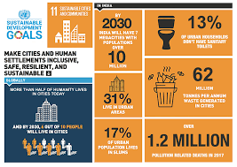

SDG 11:Make cities inclusive, safe, resilient and sustainable
The world’s population is constantly increasing.To accommodate everyone, we need to build modern, sustainable cities. For all of us to survive and prosper, we need new, intelligent urban planning that creates safe, affordable and resilient cities with green and culturally inspiring living conditions.
The 17 SDGs take into account that action in one area will affect outcomes in other areas as well, and that development must balance social, economic and Environmental Sustainability.
The targets of SDG 11 include investment in public transport, creating green public spaces, and improving urban planning and management in participatory and inclusive ways.
SDG 11 has 10 targets to be achieved, and this is being measured with 15 indicators. The seven "outcome targets" include: Safe and affordable housing, affordable and sustainable transport systems; inclusive and sustainable urbanization; protect the world's cultural and natural heritage; reduce the adverse effects of natural disasters; reduce the environmental impacts of cities; provide access to safe and inclusive green and public spaces. The three "means of achieving" targets include: Strong national and regional development planning; implement policies for inclusion, resource efficiency and disaster risk reduction; support least developed countries in sustainable and resilient building.
|
 |